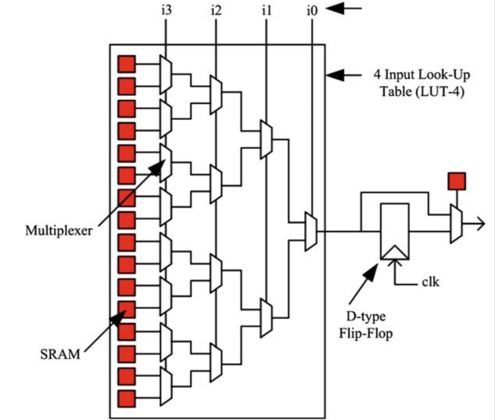
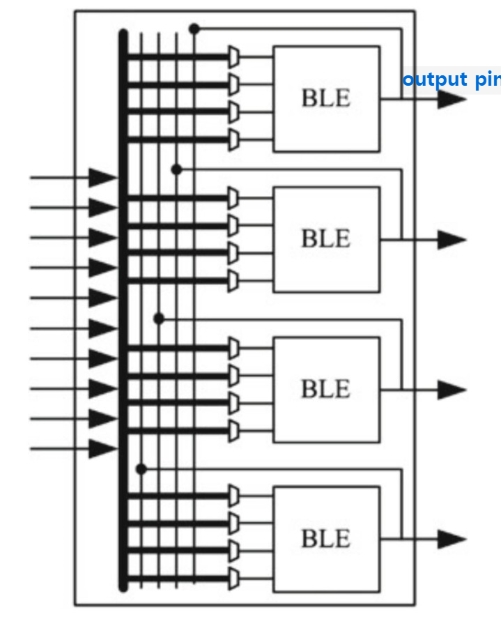
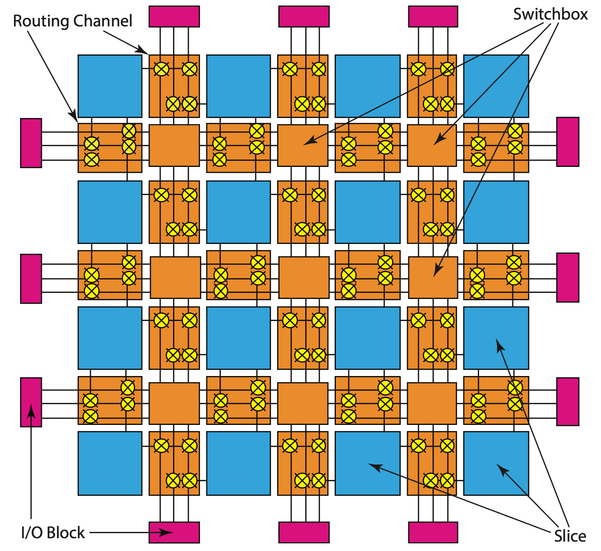
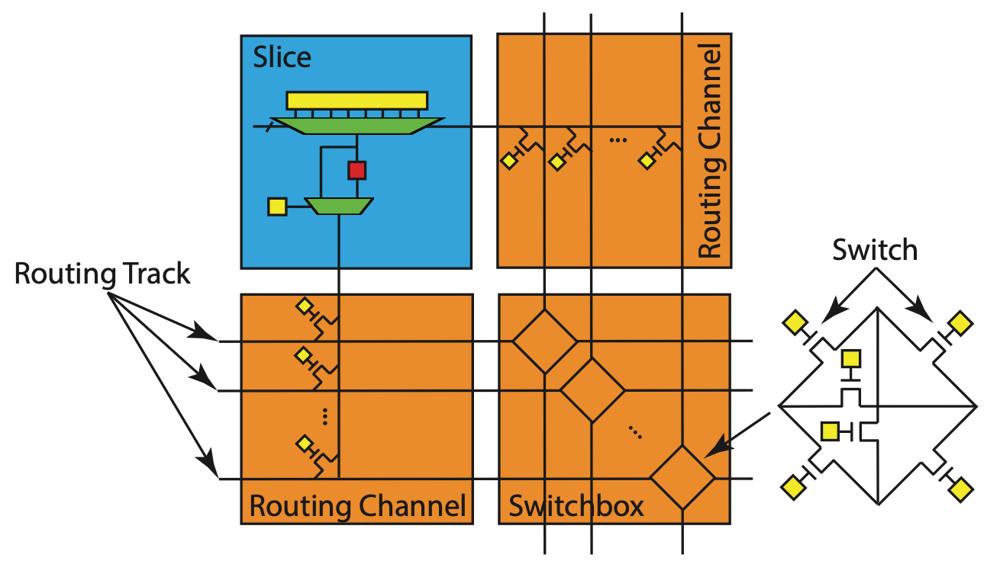
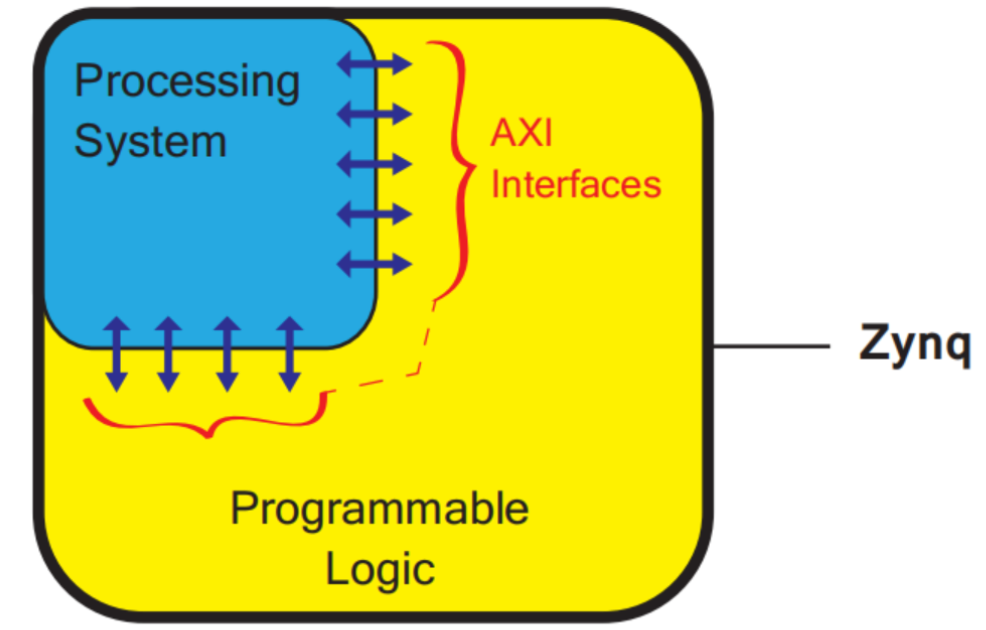

FPGA 原理速成
FPGA Structure 结构
PL (Programmable Logic) 可编程部分
这个部分是一个 FPGA 开发板 “软” 的部分, 即可以通过 verilog 来控制硬件电路的部分. 要理清一下几个概念:
- BLE (Basic Logic Element): 基本逻辑单元. LUT 和 FF 的「经典」的组合.
见 Figure fig-ble, 方框代表 LUT (Look up Table), 本质上就是一个 Mux (Multiplexer, 多路选择器).
红色的位置将来的 bitstream 会写入 (用来配置这个 BLE 的功能), i0-i3 是这个 BLE 的输入, 右边是输出.
Figure 1: 这个 BLE 由 LUT-4 和 D-FF 组成
- CLB (Configurable Logic Block, Xilinx) 可配置逻辑块: 一个或者多个 BLE 的组合.
- 也叫 Slice (Vivado HLS) 或 LAB (Logic Array Block) 或 ALM (Adaptive Logic Module, Intel).


SB (SwitchBox): 连接不同 CLB 的开关盒.
Figure 2: Slice (蓝色) 和其周围的 SB (SwitchBox) [1]

PS (Processing System) 处理器部分
不要认为一个开发板只有 “软” 部分, 有些 (ZYNQ) 经常用的模块会用硬件 “焊死” 在板子上 (Heterogenous 异构、SoC). 这些硬件通过 I/O 口与 PL 部分通信, 比如:

以 ZYNQ XC7Z010 为例, 在 Vivado 中创建工程 Create Block Design 后, 添加 ZYNQ7 Processing System IP 核 (Figure fig-zynq-xz7z-ps-pl), 可以看到 PS (白色) 和 PL (灰色) 以及他们之间的连接:

编译过程
Synthesis 综合
动机: FPGA 不懂 “行为”, 它需要的是 “你想用哪些门, 怎么连线”. 所以 Synthesis 是将你写的
.v逻辑翻译成各种 Logic gates 应该如何连接 (门级网表) 的过程 (以.json格式输出).
References
[1]
R. Kastner, J. Matai, and S. Neuendorffer, “Parallel Programming for FPGAs,” ArXiv e-prints, May 2018, Available: https://arxiv.org/abs/1805.03648